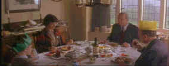

Shadowlands/A,C |
HBO/1993/133m/WS
2.35 |
"The pain then is part of the happiness now." With words of such prescience and
profound emotion Joy Gresham, in a mature, totally assured performance by Debra Winger,
expresses the reality of their situation to C.S. Lewis, in another incredible performance
by Anthony Hopkins.
Shadowlands is a very unusual
love story that evolves in such a natural, uncluttered way. Extracted from the real life
romance of the world renowned British author of children's books and the aggressive
American poet whose admiration for him initiates a relationship, the screenplay by William
Nicholson(based on his stage play)opens up their special world to us. These are not
normally the kinds of people we expect screen fireworks from, but the real explosiveness
comes from the honesty that has been portrayed on the screen. The details of Lewis's
everyday existence portray a convincing picture of a confirmed bachelor. The setting in
and around Oxford University in England creates a closed world through the which the
camera cracks a pathway .
 |
Civilized British hospitality.©HBO |
This is not one of those
love at first sight romances awash in smarmy clichés. It is a solid adult story of great
beauty. Director Richard Attenborough, known more for his big productions, does remarkably
well with this intimate tale of love and life. The camera strokes the interior landscapes
in sensual movements and the few view of the green English countryside are breathtaking.
The small sounds echoing through the corridors of learning add an authentic layer of
ambiance in capturing the world of Oxford Dons at dry and witty scholar's interplay.
As carefully as the production has been nurtured through
exquisite lighting, impeccable set design and intelligent script, it is still the acting
that renders an amazingly honest portrait of a developing love. Hopkins invests his soul
into the skin of the celluloid creation of C.S. Lewis. He is the Oxford professor, utterly
self-satisfied with a safe and comfortable existence only to be slowly drawn into an
irresistibly incipient love affair. From the initial screen moment of Winger announcing
"Anyone here called Lewis," at their hotel tea meeting, the actress is perfect
as Gresham. She and Hopkins are a marvelous combination, British reserve and American
energy. These are two people falling in love, not two actors doing their job.
The supporting cast is equally fine. Edward Hardwicke as brother
Warnie Lewis is dignified and understanding and young Joseph Mazzello(Jurassic Park, Simon
Birch )is heartwarming as Douglas Gresham.
At the final fade out, the camera surveys a bucolic country
setting as Hopkins intones on the soundtrack the logical variation of the memorable
earlier phrase "The pain now is part of the happiness then," Shadowlands
guarantees there won't be a dry eye in the house.
The contrast range on this DVD seems rather inhibited. Many
scenes lack depth and the difficult set elements add tot he bland delivery of Shadowlands
images. There are a number of soft scenes. Perhaps some of them are intentionally rolled
off to prevent significant aliasing or twitter, which raises it's ugly face all too often
in this transfer. Attenborough utilizes the vertical pan rather liberally and the NTSC
system has plenty of trouble with straight lines under those circumstances. A very nice
making of documentary is included in this package. There is also a theatrical trailer and
clips from interviews with the principals about their roles. Too bad the transfer doesn't
measure up to the wonderful and extras on this DVD.
|
|
Check out
the Movie
Poster Archive for short bios and images of Susan Hayward, Kirk
Douglas, Katharine Hepburn and many more. This month's featured star is John Wayne.
The Feature Archive
has articles ranging from Akira
Kurosawa to Blonde
Bimbos and John
Ford.

Click on the image of The Heistmasters
for an interesting feature on the tough guys that pull off the big jobs. |
HOT LINKS
etown.com
Venerable Internet Magazine etown.com is making
a big growth spurt adding veteran home theater writers to their editorial and review
staff. Look for many new hardware reviews in the coming weeks.
Classic Movies
Brad Lang movie site continues to be a great tool for Internet
surfers and movie lovers. As usual, he's found some interesting links. Check out the link
for a fine Japanese site on Kurosawa films. |
Home Theater Reference Reviewing System

When you read a DVD review it's of utmost
importance to know what equipment is being used to evaluate quality. Click on the
projectors to find out more. |
|
|